01Publicidade
01–03 / 03
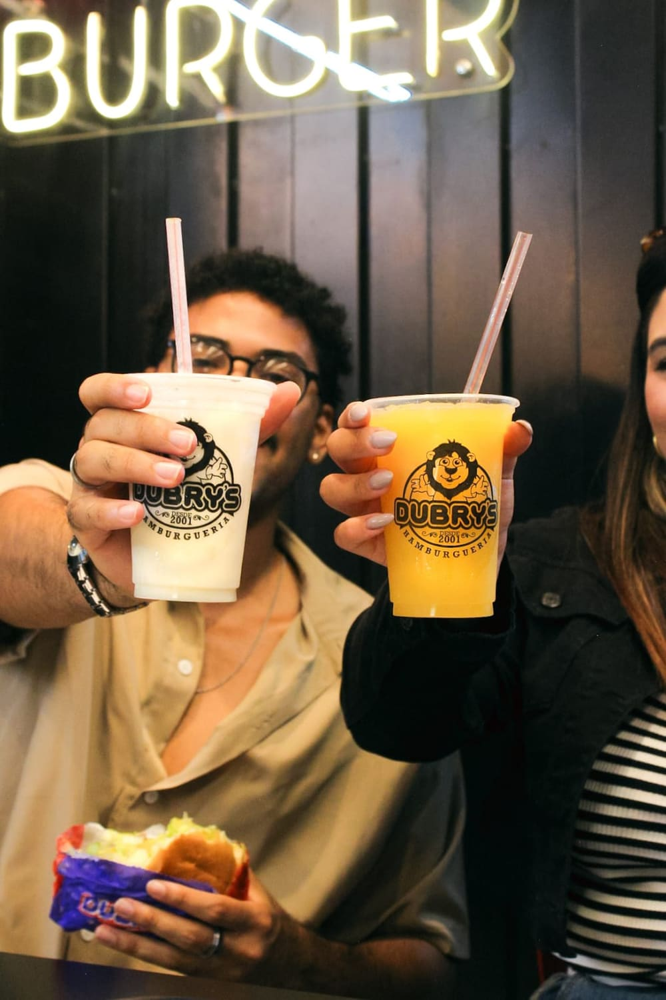
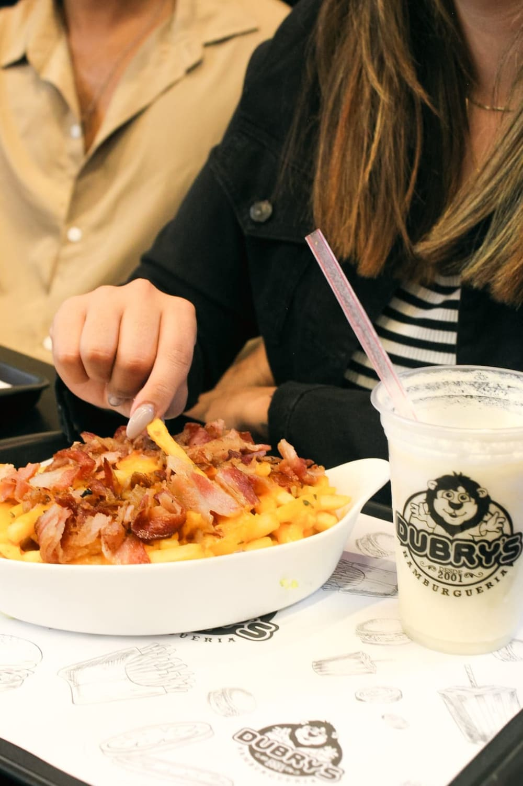
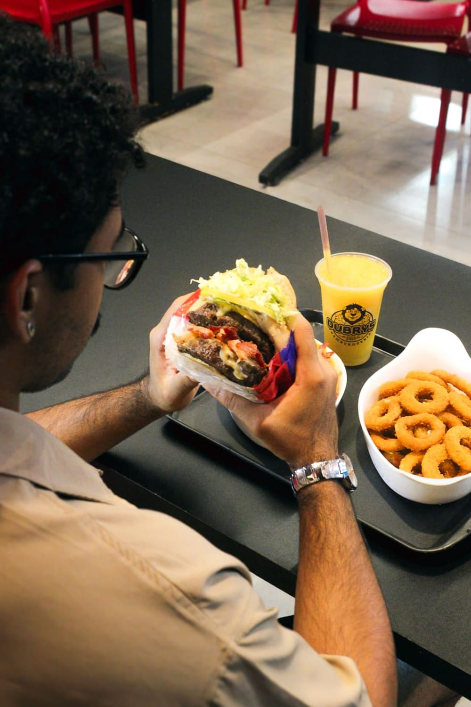

Raquel Pimentel · Fotografia
Fotografia profissional com atenção à composição e ao acabamento de cada imagem.
Trabalhos
Explore uma seleção de ensaios e coberturas. Observe os detalhes, a composição e o tratamento das imagens.
01–03 / 03



01–03 / 03
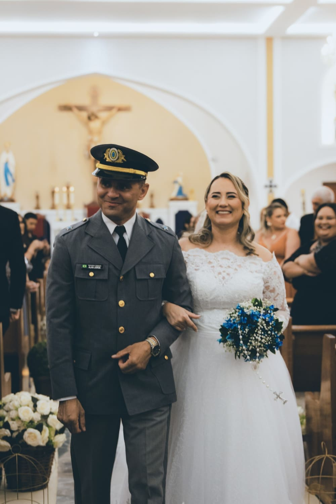
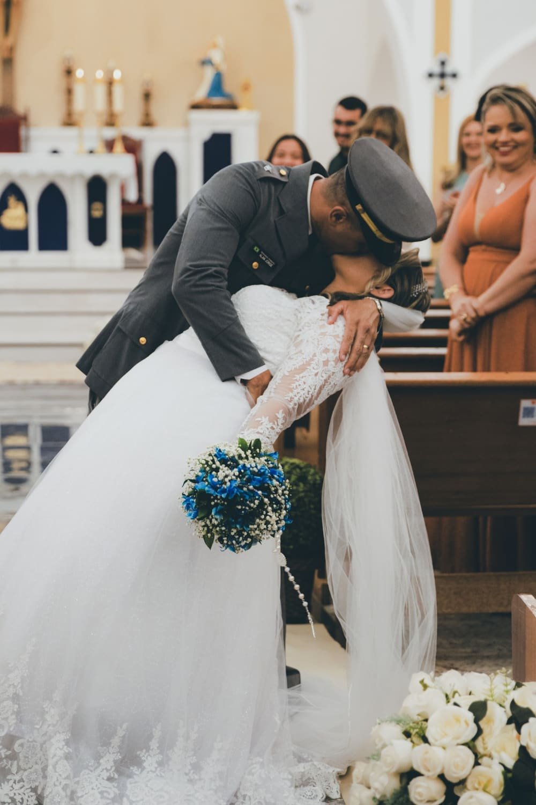
Por trás de cada imagem, existe um olhar.
01–03 / 03
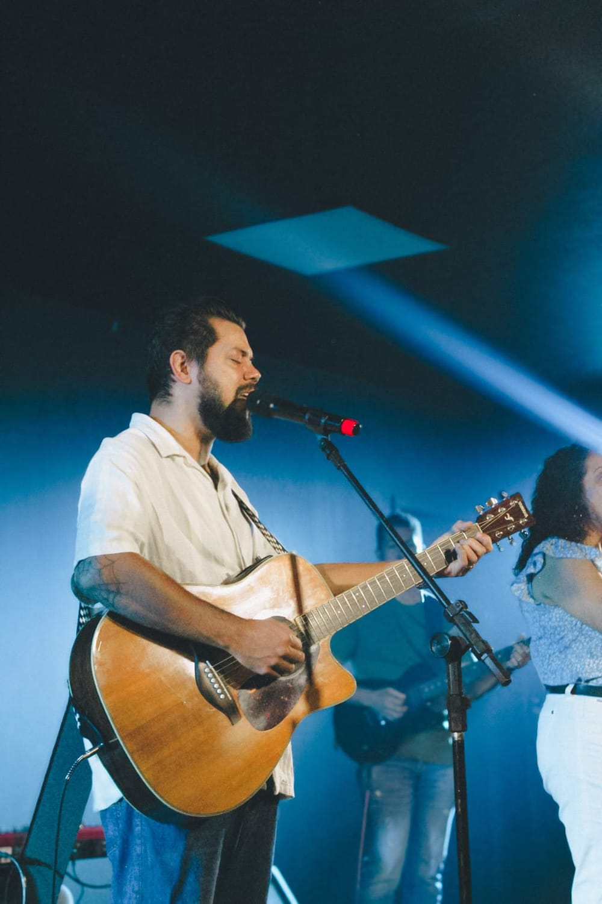
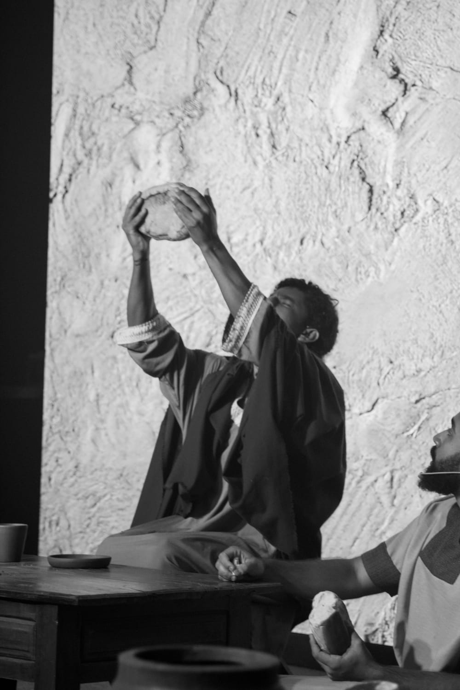
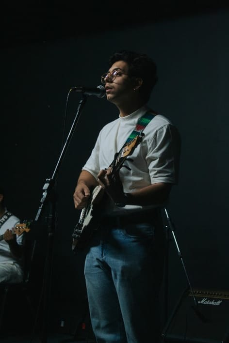
01–03 / 05
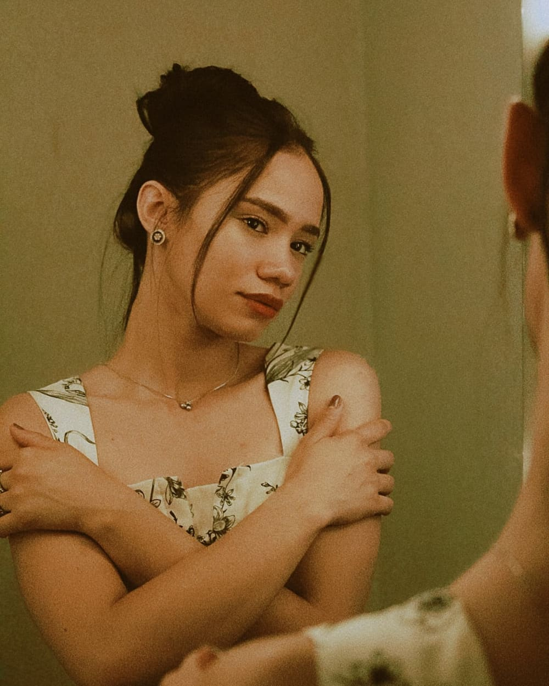
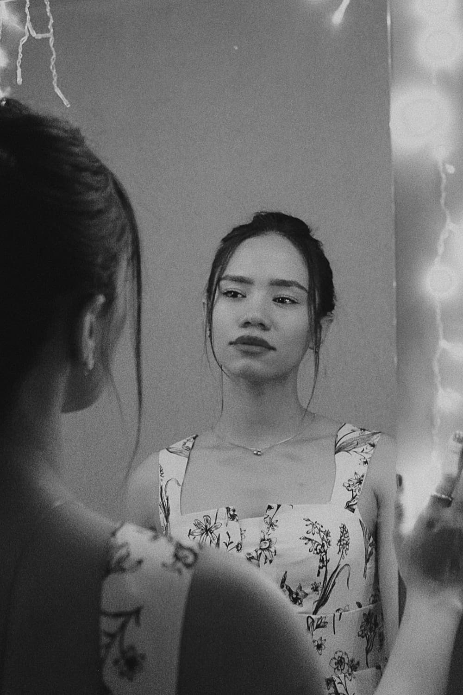
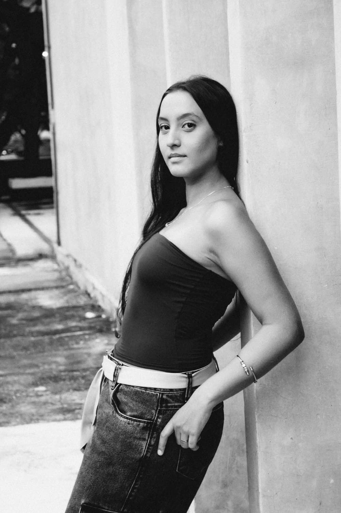
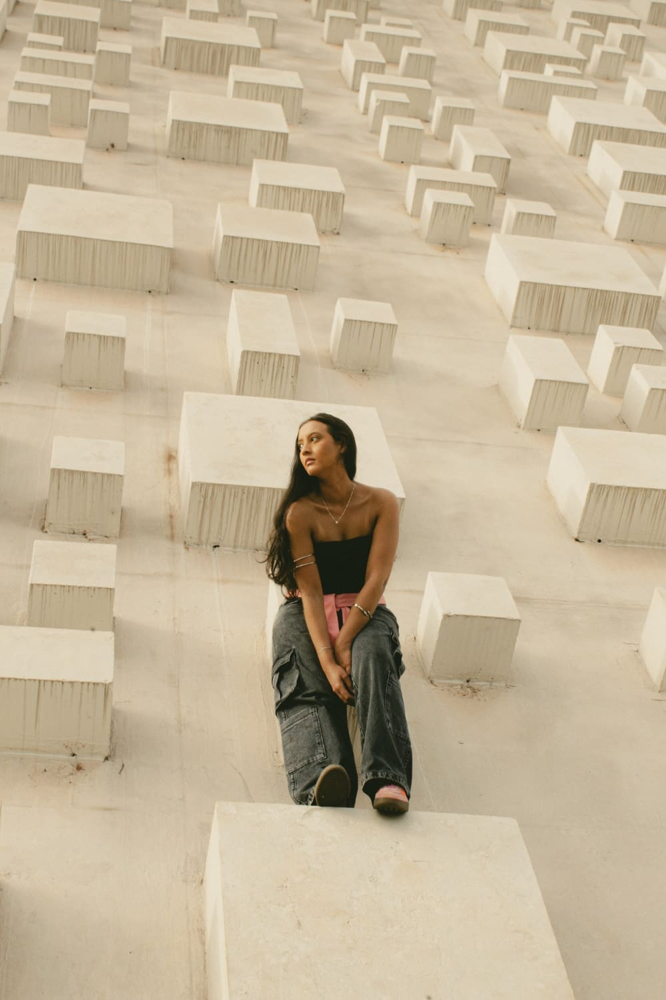
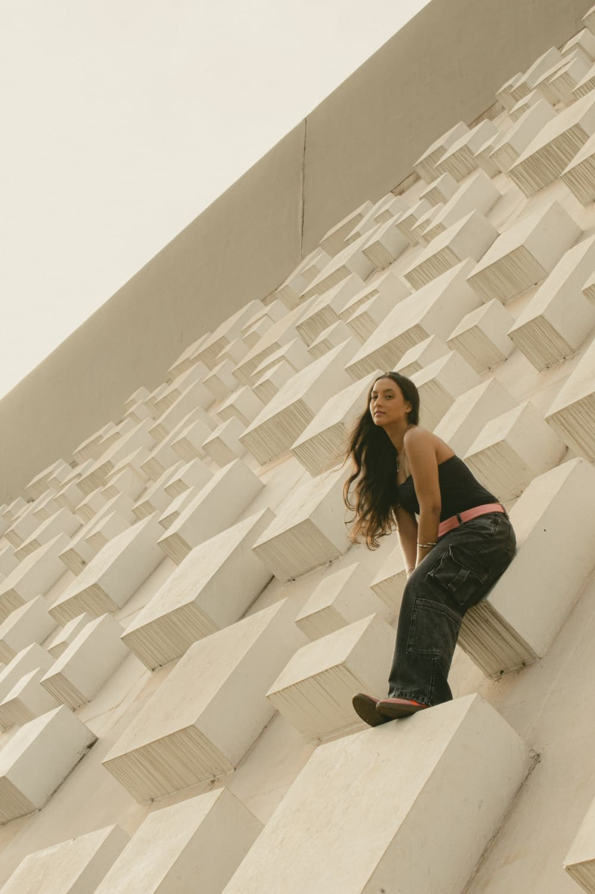
Sobre Raquel

Sou Raquel Pimentel, fotógrafa. Meu trabalho reúne retratos, ensaios e coberturas de celebrações, com atenção às pessoas e ao contexto de cada fotografia.
A escolha da luz, o enquadramento e a edição fazem parte da mesma construção: criar imagens que valorizem quem está diante da câmera, sem perder a identidade de cada trabalho.
Momento que permanece.
Orçamento
Envie pelo WhatsApp o tipo de ensaio ou evento, a data prevista e o local. A partir dessas informações, podemos conversar sobre a proposta para você.
Solicitar orçamentoOnde fotografo
Brasília – DF